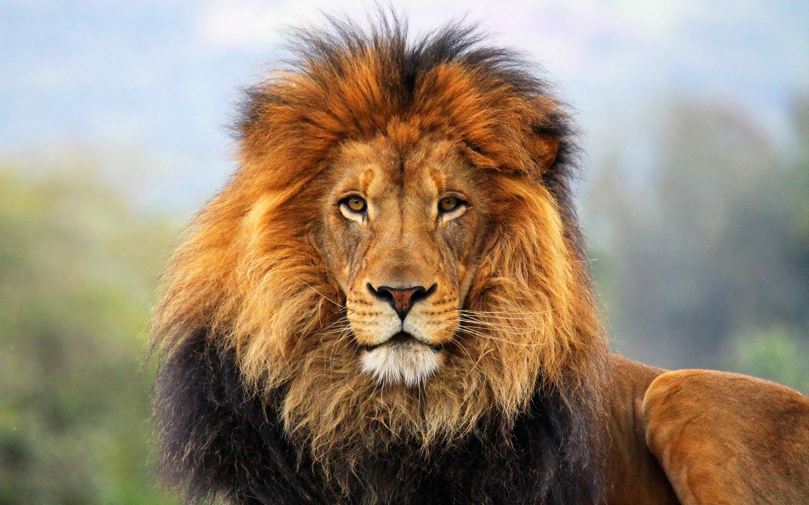

Curiosidades

- O leão é o segundo maior felino do mundo, perdendo apenas para o tigre siberiano, conhecido como o rei da selva, seu único predador é o ser humano.
- Seu tamanho pode alcançar os 2,50m de comprimento e pesar 250 quilos e sua expectativa de vida é de 20 anos de idade. O rugido de um leão pode ser ouvido em até 9 km de distância
- Os leões vivem na região sul do Saara, na África e na Índia. Se alimenta de animais como zebra, búfalos, ímpalas e até mesmo elefantes.
- O leões vivem em bando, este bando chega a ter até 40 leões, sendo um macho dominante, o restante fêmeas e filhotes
- Para dominar um bando o macho ao lutar com o líder e vencer, ele sacrifica os filhotes do antigo líder para que as fêmeas entrem no cio e assume somente os filhotes de sua descendência.
- Os leões costumavam a ser encontrados na África, na Ásia e na Europa, mas hoje eles se encontram somente na África, com a excessão do leão asiático, que está sendo protegido no Sasan-Gir National Park na Índia, que possui mais ou menos 400 leões em sua custódia.
- Os leões com crinas negras são machos alfa. Os níveis de testosterona de um leão de juba negra são mais altos que os de outros machos, seus filhotes são mais propensos a sobreviver e ele é mais propenso a se recuperar de feridas. As leoas preferem um companheiro de barba escura
- Há mais estátuas de leões no mundo do que leões reais.
- Os leões podem engolir completamente a boca e o nariz de grandes presas com sua própria boca. A presa morre por sufocamento.